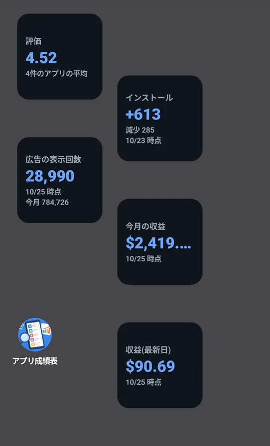

📖 はじめに（この画面でできること）
アプリを開かなくても、ホーム画面で、収益・インストール数・評価を確認できます（Android）。
🛠️ 詳しい使い方
STEP 1
5種類のウィジェット
ホーム画面に置けるウィジェットは、次の5種類です。
- 収益（最新日）: 最新の日の広告収益。
- 今月の収益: 今月の広告収益。
- 広告の表示回数: 最新の日の表示回数と、今月の合計。
- インストール: 最新の日のインストール数と、減少数。
- 評価: 選んでいるアプリの評価の平均（「4件のアプリの平均」のように、何件の平均かも出ます）。
データが無いときは、「データなし」と表示されます。

ホーム画面に置いたウィジェット
STEP 2
ウィジェットを置く
ホーム画面の何もない場所を長押しして、「ウィジェット」から「アプリ成績表」を選び、置きたいウィジェットをホーム画面に追加します（操作は、お使いの端末によって異なります）。
ウィジェットを選ぶ画面の名前と説明は、端末の言語で表示されます。
STEP 3
数字の更新と、対象のアプリ
ウィジェットの数字は、アプリが端末に保存したデータから集計します（ウィジェット自身は通信しません）。
- アプリで選んでいるアプリの分が集計されます。
- データの取得が終わったとき、30分ごとの自動更新のとき、ウィジェットを置いたときに更新されます。
- ウィジェットの中の文字は、アプリで選んだ言語で表示されます。
- スキンを変えたとき、バックアップから復元したときも、ウィジェットが最新の内容になります。
❓ よくある質問（FAQ）
Q ウィジェットの数字が古いです。
ウィジェットは、アプリが保存したデータを表示します。アプリを開いてデータを取得すると、更新されます。30分ごとにも自動で更新されます。
Q ウィジェットの色を変えられますか？
アプリの「スキン」に合わせて、ウィジェットの背景色が変わります。
Q ウィジェットに出す数字は、アプリを絞り込めますか？
はい。アプリで選んでいる（対象アプリ）の分が集計されます。